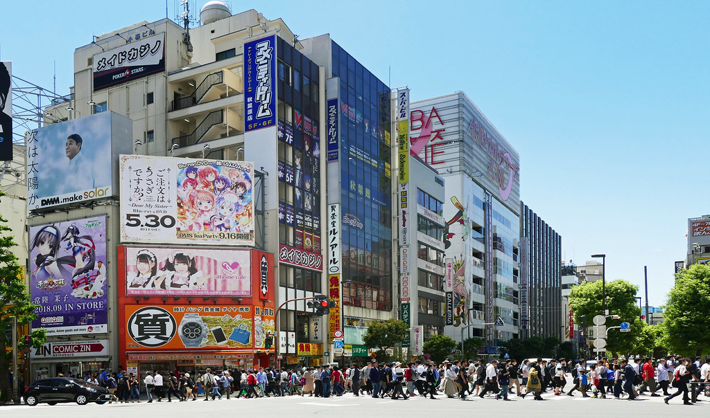
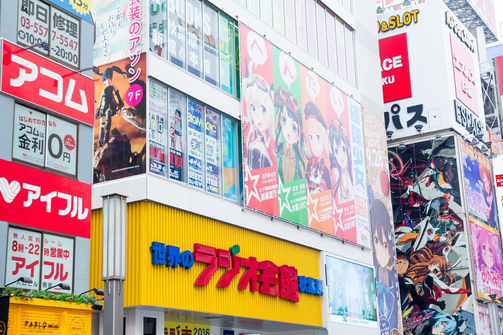

In akihabara the walls themselves will allow you to know where you are with their beautiful art and pictures that have been drawn on them
In akihabara a must do if you are a anime fan is You should go to radio Kaiken it is a multi story building with all the anime products you could want.
A tech savy person might want to go to yodobashi right outside of akhabara station this building is a nine story building with many stores inside of it being dedicated to the newest tech while some of the other stores are dedicated to things lik anime and video games